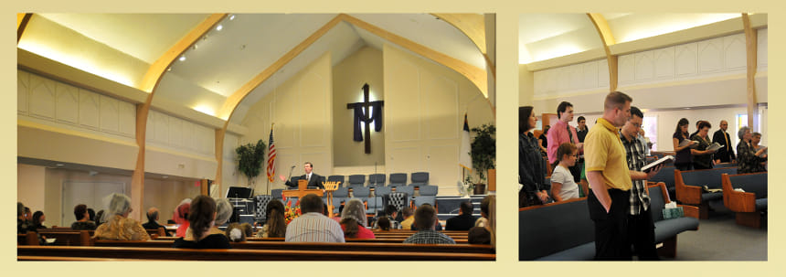

Богослужения
Дорогие друзья, наши богослужения продолжаются в 14:00 по воскресениям по адресу 8124 E Main St Frisco, TX 75034.
Мы приглашаем вас
Мы приглашаем вас посетить Воскресные Богослужения евангельских христиан баптистов. Каждое Воскресение вы сможете услышать наставительные проповеди на русском языке, обратиться к Богу в своих молитвах и прославить Его в Христианских песнопениях. В нашей церкви Вечеря Господня совершается в первое воскресение каждого месяца.